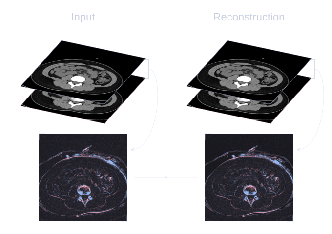

Schematic · slice-difference supervisionScroll the diagram horizontally to explore both loss terms.
Structural fidelity / SliDR
Anatomy continues
between slices.
Organs and lesions extend through a volume. Accurate individual slices alone do not ensure that their boundaries remain continuous.
Slice Differential Regularization matches the reconstruction’s first- and second-order slice differences to those of the input. It preserves the observed anatomical transitions and curvature, rather than making neighboring slices identical.
 Schematic · foundation models ↔ MedVTok
Schematic · foundation models ↔ MedVTokScroll the diagram horizontally to explore both loss terms.
Clinical semantics / MERA
Shared knowledge.
Complementary expertise.
Different modalities reveal different clinical cues. A common representation should retain that expertise as it brings the modalities together.
Multi-Expert Representation Alignment first maps each foundation model’s features into MedVTok’s shared representation space for contrastive alignment. It then maps MedVTok’s features back into each foundation model’s native space for complementary alignment, preserving that model’s distinctive knowledge. Foundation models supervise training; inference uses MedVTok alone.